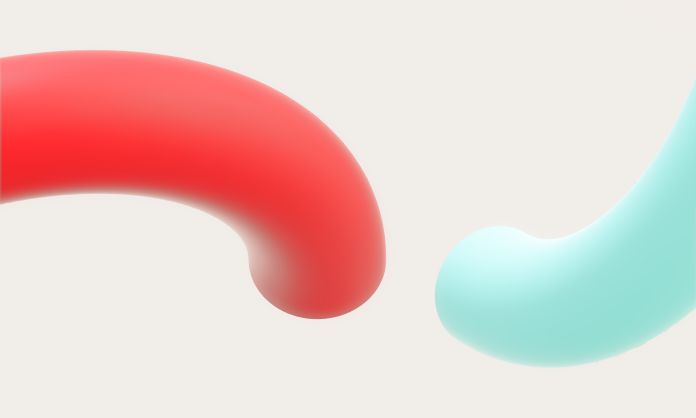

如果你不是包揽全部开发工作的那个人，那就是时候放下 develop 分支了。
是全部的开发工作。
这种情况在公司里很常见：在企业级（如果你愿意这么叫的话）、多少带点 scrum 味道的环境里，决定发布里放进什么的人不是你。正是在这一点上，把开发分支当作未来版本的整个思路完全说不通。
设想一个典型的基于 scrum 的 Web 应用，你和团队的同事们在 [公司名称] 开发和维护它。任务在 Jira 里管理，你们用 Github for Enterprise，遵循 GitFlow 策略（这个策略很漂亮）。你们把代码 merge 进 Develop。
问题是什么
- 你在一个 sprint 里做的东西，不一定都会进入发布
- 你做的东西，也不一定本来就打算在这次迭代中发布
- 即使代码是为下一次迭代准备的，你和队友们仍然会想把它 merge 进去
这会导致什么
- 到了发布日，你最后只能手动挑选要发布的内容，再手动打补丁。这样拼出来的代码版本，其实从没被开发新功能的开发者们测试过。这是一个谁也没见过的全新宇宙。
- 最糟的是：你可能不得不删掉一些东西。这样不仅造出了一个无法预测的宇宙，还可能在途中漏掉什么。漏掉的东西第二天就会在生产环境里冒出来，而且往往是在夜里。
- Develop 分支的存在本身就会让人糊涂：有了它，你可以不去想手上这个功能的目标版本是哪个，也可以不去和你服务的业务方沟通（没错，有时候一个功能的目标版本确实说不清）。
怎么解决
删掉 develop 分支。放下它。
它只是一个“未来版本”的概念，你不该为它付出代价。
只保留 release 分支。让 pull request 指向 release 分支。只要你和团队觉得方便，随时可以把旧的 release 分支 merge 进新的。把这定成规矩：新版本一部署，就把代码 merge 进下一个 release 分支。目标版本不明确时，去问利益相关方。一旦某个功能的目标版本变了（比如它现在上线还太早），就马上 revert 它的代码，并确保利益相关方明白 rebase 一个功能的代价。
重新开始思考。release 分支永远保留。用 tag 来追踪每次发布。小改动就留在 release 分支里。放下 develop 分支（并确保 master 分支也跟它一起走）。
对你来说，根本不存在默认的 develop 分支这个概念？那你完全可以不要它。
你大概会开始考虑 feature flag，但我建议三思，因为它从来都不便宜。每一种功能状态，又是一个同样没被测试过的宇宙。
原文发表于 Medium：https://medium.com/@nettsundere/its-time-to-let-the-develop-branch-go-f69243d546a9